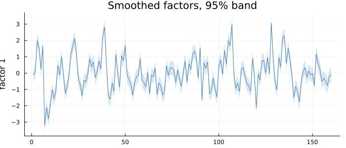
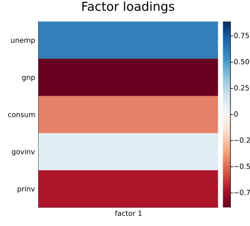

API: Dynamic Factor Models
Many series driven by a few common factors that follow a VAR, estimated by maximum likelihood on the sequential multivariate Kalman filter, with an explicit identification so the fit is unique. Standardise first with standardize when the series differ in scale — the model does not do it for you. The task-oriented guide is Manual: Dynamic Factor Models.
using TSAnalytics, Plots
e = dataset("econ5")
g(x) = 100 .* diff(log.(x)) # quarterly growth, per cent
Z = standardize(hcat(diff(e.unemp), g(e.gnp), g(e.consum), g(e.govinv), g(e.prinv)))
Y = (unemp = Z[:, 1], gnp = Z[:, 2], consum = Z[:, 3], govinv = Z[:, 4], prinv = Z[:, 5])
m = fit_dfm(Y, 1)
plot(factor_paths(m); size = (700, 300))
One factor behind five quarterly US series — unemployment, GNP, consumption, government and private investment, all in changes — with its 95% band.
plot(loadings_plot(m); size = (420, 380))
The loadings: which series move with the factor, and in which direction. The identification makes the first series' loading positive, so this factor rises with unemployment — and GNP and private investment load on it negatively. Its sign is a convention; the pattern is not.
Fitting
TSAnalytics.fit_dfm — Function
fit_dfm(Y, r; p=1, start=nothing, params=nothing) -> DFMModelFit a dynamic factor model by maximum likelihood: the N columns of Y (observations × series) driven by r < N common factors following a stationary VAR(p),
y_t = Λ f_t + ε_t, ε_t ~ N(0, H), H diagonal
f_t = A_1 f_{t-1} + … + A_p f_{t-p} + η_t, η_t ~ N(0, I)Y is used as given. The likelihood is not scale-invariant, so the model does not standardise inside the fit; pass standardize(Y) when the series are on different scales (the references do not agree on this either). Missing values (NaN) are allowed and skipped.
The model is identified explicitly, which neither reference does: the factor innovation variance is I (as statsmodels' DynamicFactor), and the leading r × r block of Λ is lower-triangular with a positive diagonal, removing the remaining rotation and the sign flips. The fit is therefore unique – r(r−1)/2 fewer parameters than DynamicFactor, with the same maximised likelihood, because the removed directions are flat. R's dfms leaves the factor covariance unrestricted, pinned only by its PCA start. rotate_factors gives any other rotation without refitting.
The prior is the factor process's stationary distribution, recomputed from the parameters at every evaluation – DynamicFactor's convention. dfms estimates the initial state instead (and statsmodels' DynamicFactorMQ does so by default), which moves the reported likelihood by about 0.9 on the test fixtures; compare like with like.
Estimated by direct maximum likelihood (L-BFGS, automatic derivatives), with the factor VAR kept stationary by an Ansley-Kohn reparameterisation. EM is not provided: at the sizes this package targets, direct ML converges in tens of iterations where EM takes thousands.
r >= N, N < 2 and p < 1 are refused (p = 0 would not mean "static factors" in either reference). start (a (Λ, A, H) tuple) overrides the PCA starting values; params evaluates the model at given (Λ, A, H) without optimising.
julia> using TSAnalytics, DelimitedFiles
julia> Y = readdlm(TSAnalytics.US_CHANGE, ','; skipstart=1);
julia> m = fit_dfm(standardize(Y), 1);
julia> round(m.loglik, digits=2)
-1143.52
julia> round.(vec(factor_r2(m)), digits=2)
5-element Vector{Float64}:
0.43
0.1
0.9
0.01
0.84TSAnalytics.DFMModel — Type
DFMModelA fitted dynamic factor model, from fit_dfm: Lambda (N × r loadings), A (the factor VAR's p coefficient matrices), H (the N idiosyncratic variances), the smoothed factors and their standard errors (factors), loglik, converged, and normalisation – :lower for the fitted identification, :rotated after rotate_factors.
TSAnalytics.standardize — Function
standardize(X) -> Matrix{Float64}Each column of X centred on its mean and divided by its standard deviation with n − 1 in the denominator, ignoring NaNs (which stay NaN). Accepts anything tsmatrix does.
Kept as a separate step on purpose: fit_dfm does not standardise inside the fit, because the likelihood is not scale-invariant and a standardisation buried in the fitter makes it incomparable. The references differ here – R's dfms always standardises (with n − 1), statsmodels' DynamicFactor never does, and DynamicFactorMQ does with a denominator that depends on whether the input is a pandas DataFrame (n − 1) or a NumPy array (n), a 2.5 log-likelihood shift on the same data.
Factors and rotation
TSAnalytics.factors — Function
factors(m::DFMModel) -> (F, se)The smoothed factors, observations × factors (statsmodels returns them the other way round), with their standard errors.
TSAnalytics.rotate_factors — Function
rotate_factors(m::DFMModel, G) -> DFMModelThe same fitted model in another rotation: Λ G, f̃ = G' f, Ã = G' A G for an orthogonal G (a reflection is allowed). The likelihood is unchanged; the result records normalisation = :rotated.
How much the factors explain
The charts above and the variance-decomposition and selection charts are built by factor_paths, loadings_plot, factor_r2_plot, factor_selection_plot and factor_residual_plot, documented in API: Plotting.
TSAnalytics.factor_r2 — Function
factor_r2(m::DFMModel) -> Matrix # N × r
series_r2(m::DFMModel) -> Vector # Nfactor_r2[i, j] is the R² of series i regressed on smoothed factor j alone, with a constant – statsmodels' coefficients_of_determination. series_r2[i] is the share of series i's variance explained by all the factors together, 1 − var(y − Λ f) / var(y) – R's dfms summary()$R2. Different quantities: the first splits the explanation by factor and does not add up across factors unless they are uncorrelated.
TSAnalytics.series_r2 — Function
series_r2(m::DFMModel) -> Vector # NThe share of each series' variance explained by all the factors together, 1 − var(y − Λ f) / var(y) – R's dfms summary()$R2. See factor_r2 for the per-factor split, a different quantity.
TSAnalytics.bai_ng_ic — Function
bai_ng_ic(Y, rmax) -> NamedTuple (r, IC1, IC2, IC3)Bai & Ng's (2002) information criteria for the number of factors, from principal components of Y (pass standardize(Y) if the series differ in scale): with V(k) the mean squared residual after k components,
IC1 = ln V(k) + k (N+T)/(NT) ln(NT/(N+T))
IC2 = ln V(k) + k (N+T)/(NT) ln(min(N,T))
IC3 = ln V(k) + k ln(min(N,T)) / min(N,T)Not a reliable selector at small N. The criteria are consistent as both N and T grow; with a handful of series they often keep decreasing past the true number (on a six-series fixture built with two factors they do).